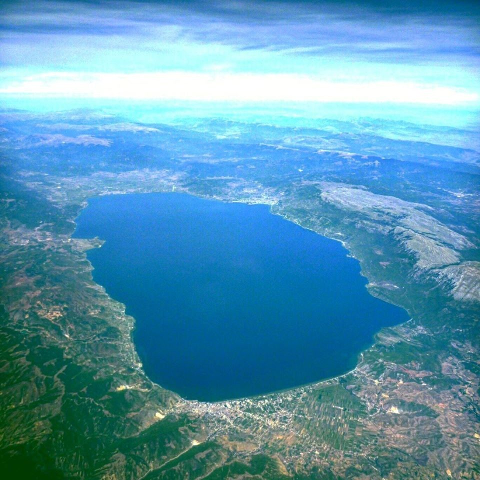

Ohrid e grad vo jugozapadna Makedonija, smesten na bregot na Ohridskoto Ezero.

Ohridsko ezero slikano od goreGradot e poznat po svojata bogata istorija, kultura i prirodni ubavini. Ohrid e poznat i po svoite mnogubrojni crkvi, manastiri i arheoloski lokaliteti, koi se del od UNESCO. Gradot e popularna turisticka destinacija, privlekuvajki posetiteli so svojata unikatna kombinacija na prirodni i kulturni atrakciji.
| Aktivnosti vo Ohrid | ||
|---|---|---|
| Broj | Aktivnost | Opis |
| 1 | Plivanje vo ezero | Ohridsko Ezero e poznato po svoite cisti vodi, idealno za plivanje i osvezuvanje. |
| 2 | Razgleduvanje na crkvi | Gradot e dom na mnogu istoriski crkvi, vklucuvajki i Sv. Jovan Kaneo. |
| 3 | Prosetka niz stariot grad | Stariot grad na Ohrid e poln so kaldrmisani ulici i tradicionalna arhitektura. |
| 4 | Vozenje so brod | Vozenje so brod po Ohridsko Ezero nudi prelepi pogledi na okolinata. |